En este primero trabajo vimos algo tan basico como mostrar un texto junto a un titulo. Fue nuestro primer vistazo a lo que serian las paginas web y su desarrollo
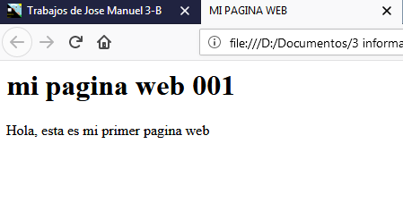 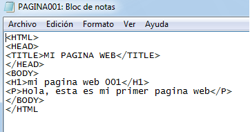
Este trabajo es de los ultimos que estuvimos trabajando, pues en este veiamos distintas maneras de darle un tono mas estetico a las actividades
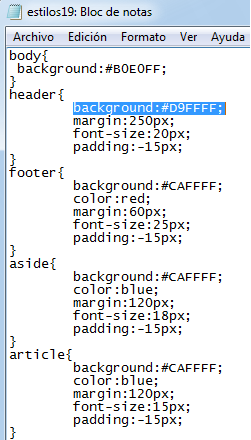 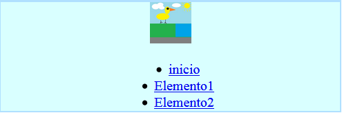
En esta actividad vimos acerca de los links para ingresar a varias paginas como youtube, twitter, twitch, etc
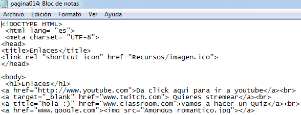 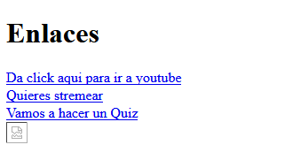
En esta actividad vimos un trabajo sobre el como colocar imagenes, y asi hasta poder crear un tablero de ajedrez
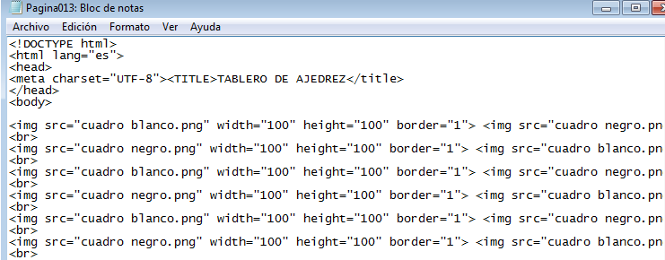 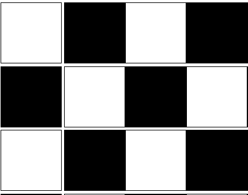
En esta actividad estuvimos comenzando el periodo 3 de informatica, y vimos algunos conceptos, como el html y etiquetas,
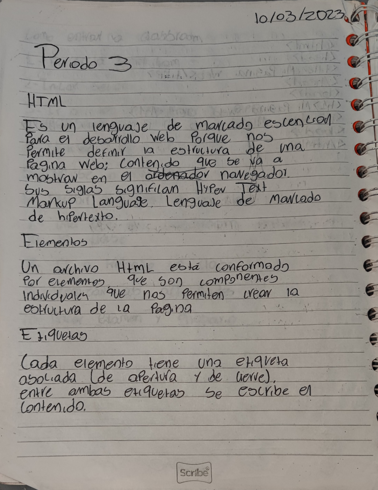
En este trabajo se vieron los parrafos en html , p el simbolo que lo representa, div era otro "elemento"
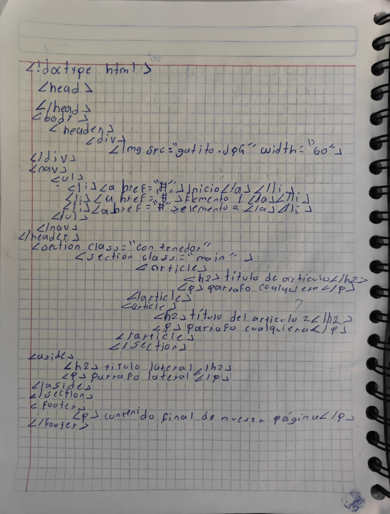
en este trabajo creamos una pagina web en la cual aprendimos a utilizar elementos como el h1, negritas, cursivas, entre otras
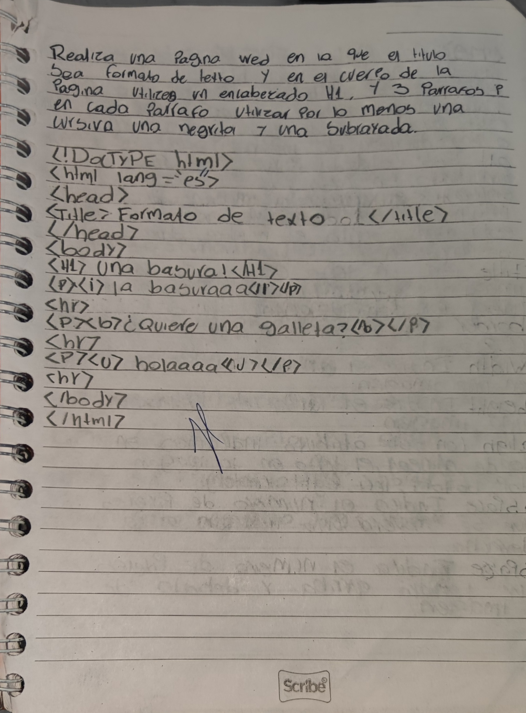
en este trabajo se vieron los elementos del arial, size, color
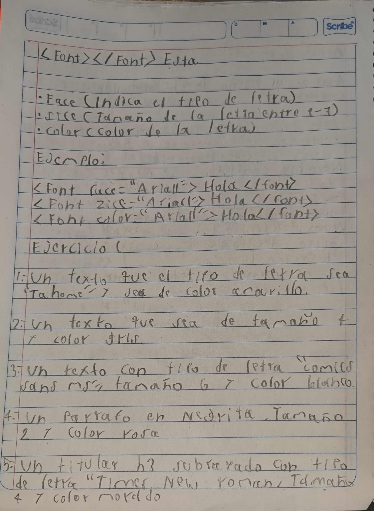
En este trabajo vimos acerca de las etiquetas html en las imagenes
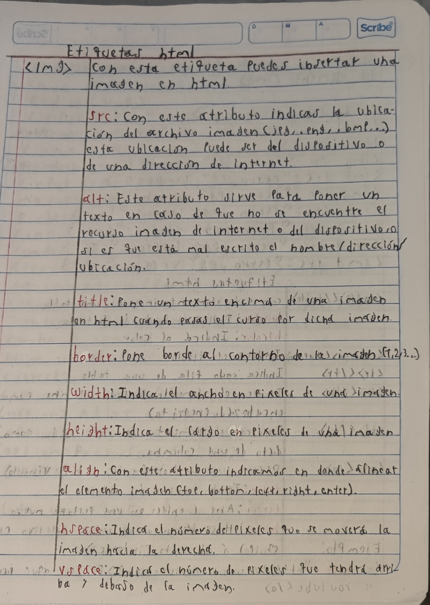
Ese dia estuvimos trabajando en una tabla sobre los basicos de la programacion en html
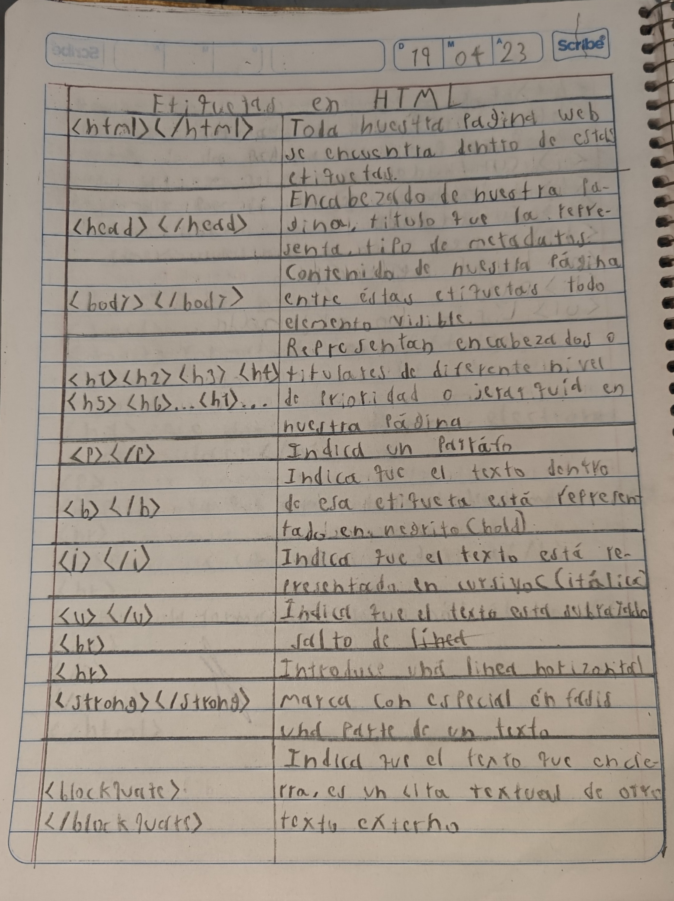
en este actividad realizamos un boceto de un formulario para despues pasarlo al codigo
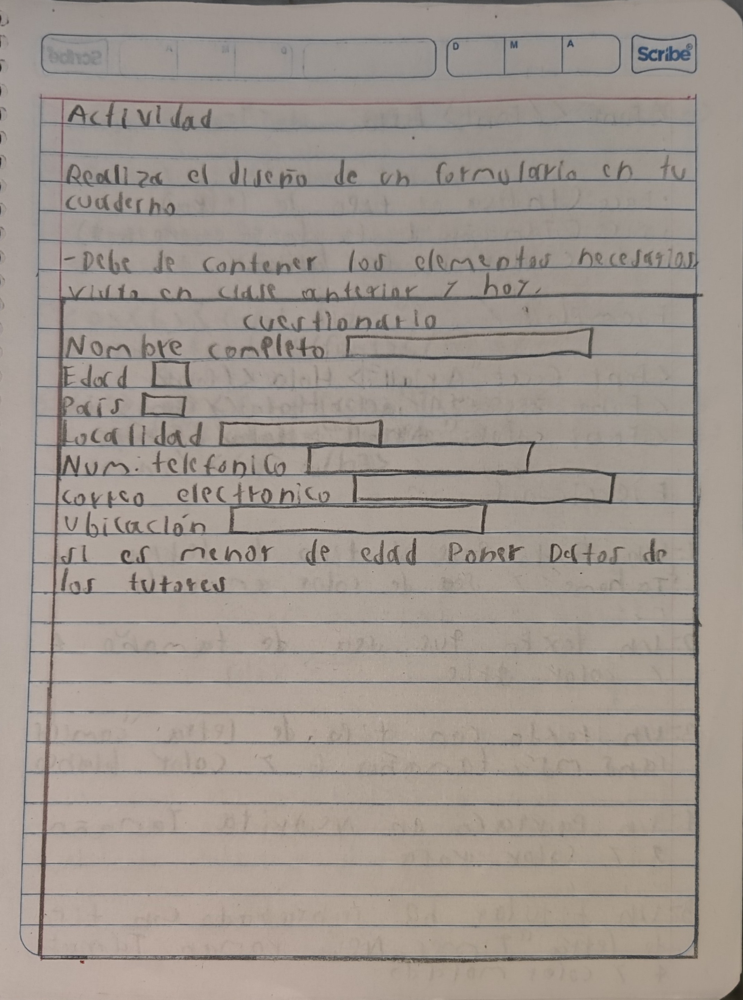
este trabajo trato de los atributos para las imagenes
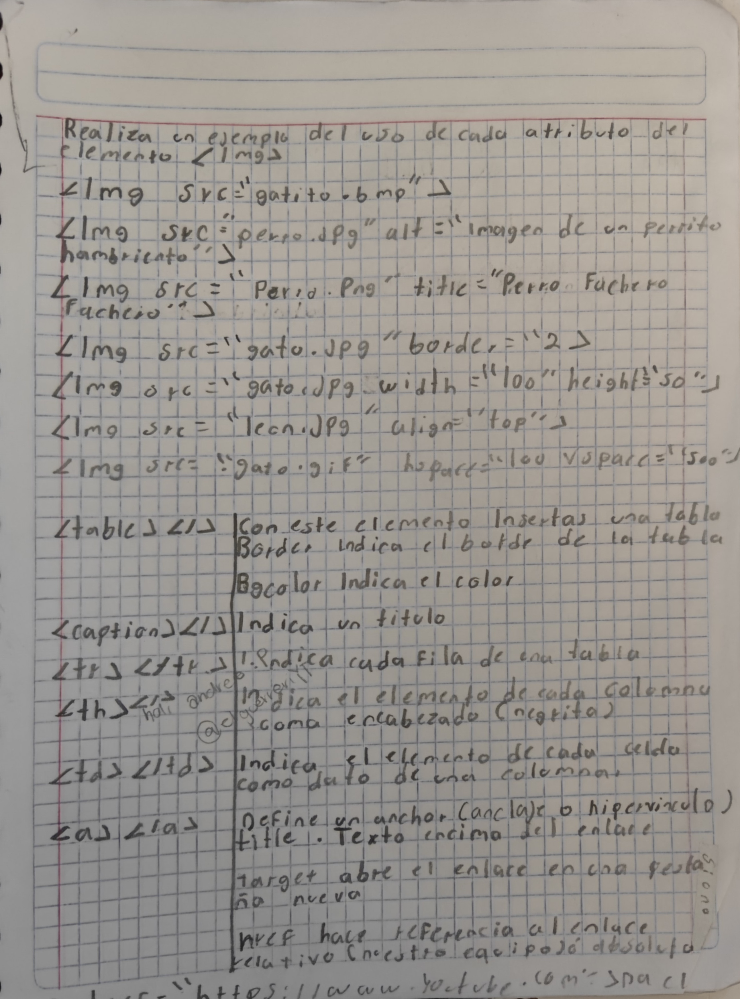